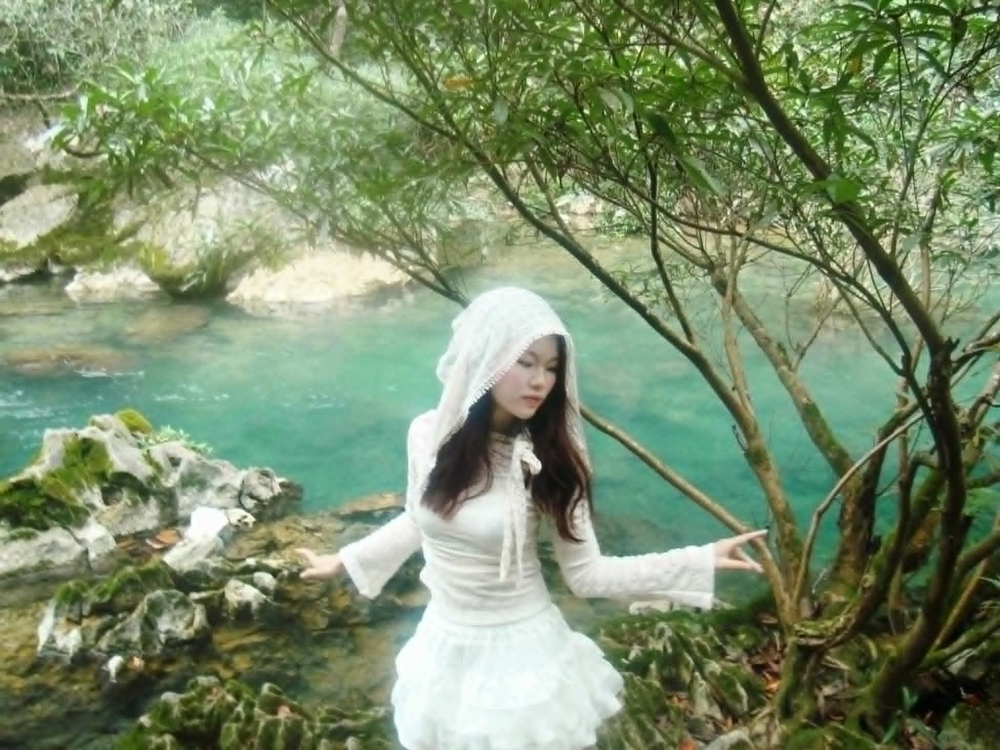
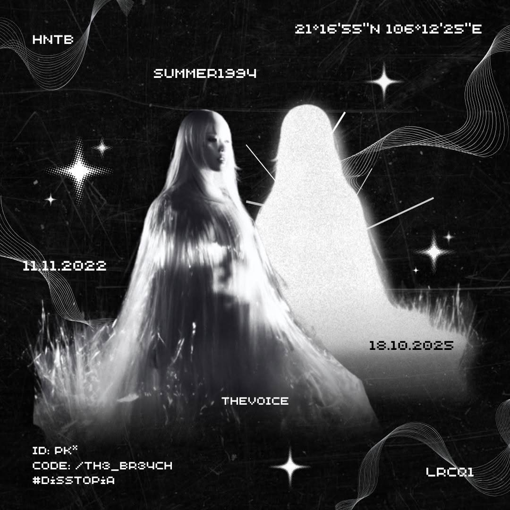
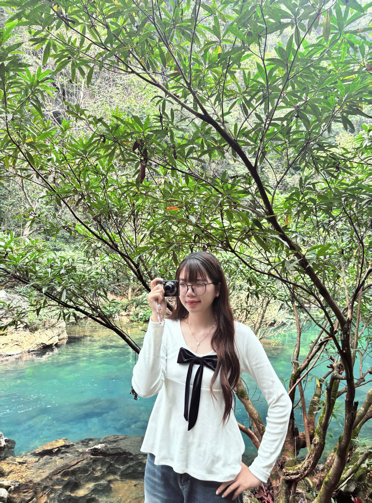
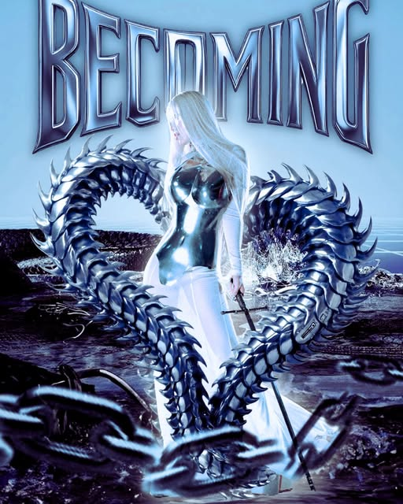
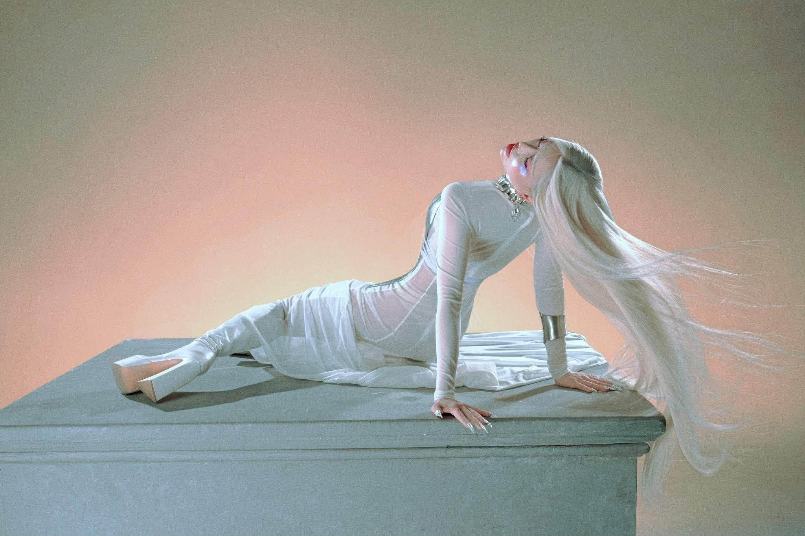
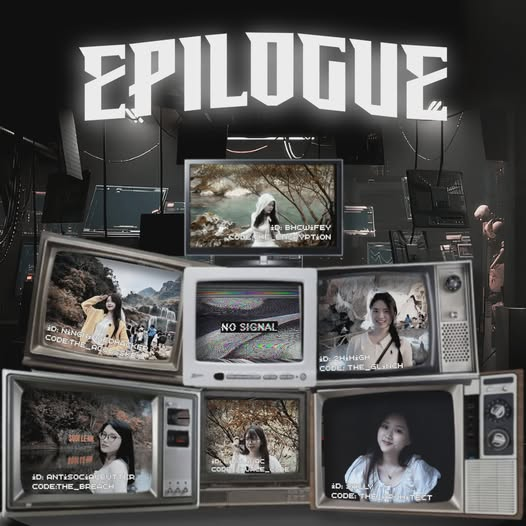
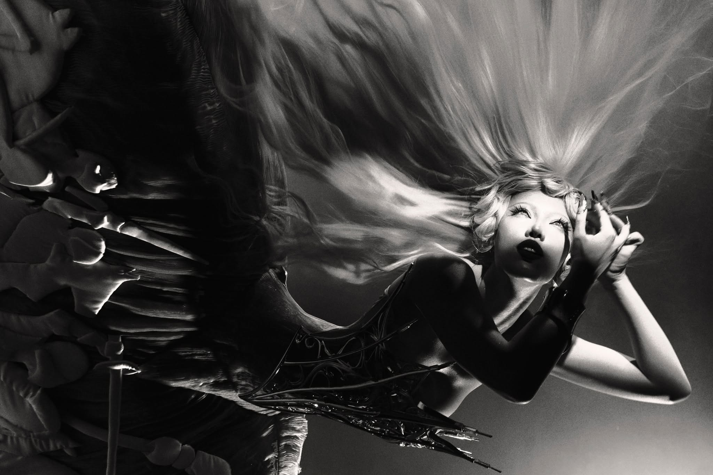

Lưu Thị NgaLeader01

DISSTOPIAsocial storytelling campaign
Một thế giới nơi cảm xúc bị dẫn dắt bởi thuật toán, nơi mỗi tín hiệu yêu thương có thể là thật, hoặc chỉ là một lớp nhiễu được dựng lên để người xem tự nghi ngờ chính mình.
Mục tiêu dự án
Tái định vị Phùng Khánh Linh như biểu tượng của sự thức tỉnh và bản sắc độc bản.
Biến album thành trải nghiệm đa giác quan kết hợp âm nhạc, hình ảnh và storytelling.
Khơi mở đối thoại với Gen Z về cảm xúc, khuôn mẫu và hành trình tự định nghĩa bản thân.
12 singles · spotify album
Mỗi lần chuyển bài, Listening Room phát một đoạn preview 8 giây. Nhấn vào bìa đang sáng để nghe trọn bài trên Spotify.
Ready to listenproject overview
DISSTOPIA tái thiết album Giữa một vạn người thành một thế giới phản địa đàng, nơi sự ổn định được duy trì bằng cách kiểm soát cảm xúc. Con người được lập trình, đánh số và vận hành như những bộ phận của hệ thống — không ký ức, không hoài nghi, không còn khả năng đặt câu hỏi.
Giữa guồng máy ấy, Phùng Khánh Linh xuất hiện như một “mã gen lỗi”: cô biết rung động, bất an và đau. Tình yêu chỉ là virus đầu tiên kích hoạt hành trình Awakening — Collapse — Becoming, đưa cô từ thức tỉnh, khủng hoảng đến chấp nhận bản ngã. DISSTOPIA vì thế không chỉ kể chuyện tình yêu; dự án đặt ra câu hỏi: bạn đang thực sự sống, hay chỉ vận hành theo một phiên bản đã được lập trình sẵn?
team


Tình yêu xuất hiện như một virus kích hoạt cảm xúc đầu tiên. Nữ chính bắt đầu nhận ra mình khác biệt và tự hỏi: cô đang thức tỉnh, hay chỉ là một hệ thống đang hỏng?
Khi cảm xúc trở thành bằng chứng của sự sai lệch, cô rơi vào khủng hoảng bản ngã: sửa mình để trở lại an toàn, hay tiếp tục bước sâu vào phần chưa được định nghĩa?
Cô nhận ra lỗi không nằm ở bản thân mà ở thế giới đã triệt tiêu cảm xúc. Tình yêu không còn là đích đến, mà là chất xúc tác để cô lựa chọn sống như chính mình.

ACCESS KEY: PHASE 3_BECOMING
Khoảnh khắc nhân vật thoát khỏi vòng lặp được lập trình và chọn trở thành phiên bản thật của chính mình.

EPILOGUE: HỒI KẾTĐiểm kết của DISSTOPIA, gom lại cảm xúc sau hành trình Awakening - Collapse - Becoming.
highlight flow
Threads tạo chiều sâu tâm lý cho chiến dịch bằng những câu hỏi mở, poll và tình huống cảm xúc xoay quanh “sự tồn tại” và “lỗi hệ thống”. Người xem không chỉ theo dõi cốt truyện mà được mời đối chiếu với chính mình: chọn một cuộc sống an toàn nhưng vô cảm, hay một cuộc sống đau đớn nhưng chân thật?
Mở bài Threadsfinal mood
Video tổng kết cảm xúc của DISSTOPIA, đặt trước phần kết như một điểm chạm cuối cùng để người xem bước ra khỏi câu chuyện.
Xem FMV
empathy lab
Một phòng thí nghiệm thấu cảm dạng hội thoại phân nhánh. Người xem lựa chọn tín hiệu đang khiến mình băn khoăn, sau đó đi qua những câu hỏi ngắn để nhận diện pattern cảm xúc. Disstopkl không kết luận thay người dùng; trải nghiệm được thiết kế để họ tạm dừng việc “giải mã” người khác và lắng nghe cảm giác an toàn của chính mình.